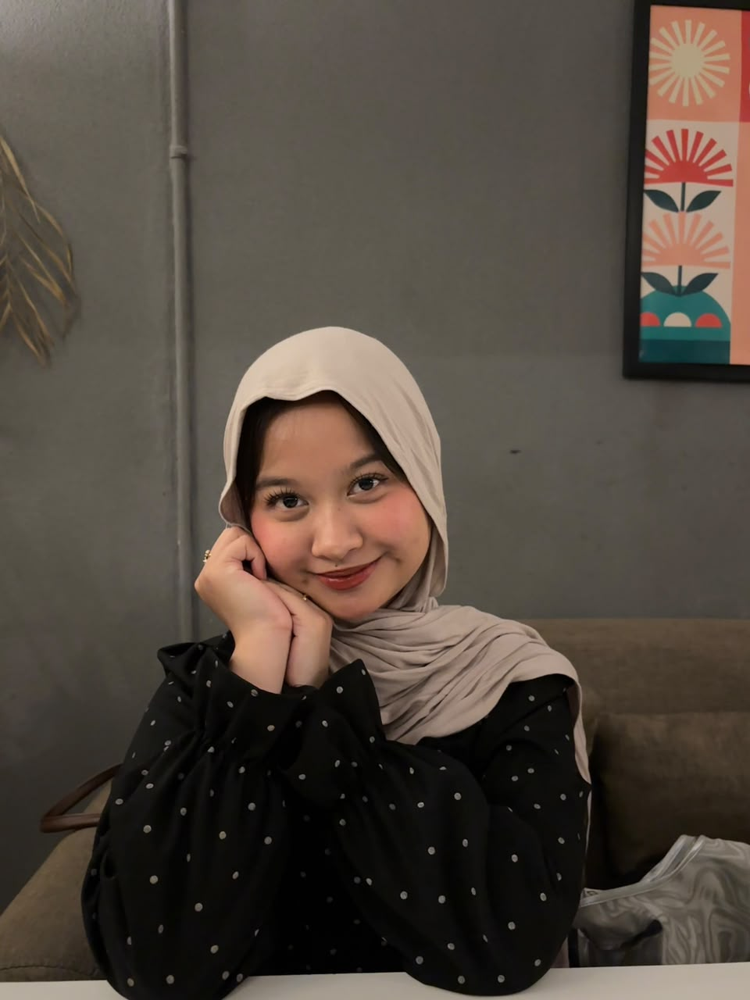

Biodata
NIM:2025081018
Nama:Mulia Kusumawardhani
Program Studi:Sistem Informasi
Agama:islam
Tanggal Lahir:26 Agustus 2007
Tempat Lahir:Tangerang

Profile Mahasiswa
Mahasiswa Sistem Informasi
NIM:2025081018
Nama:Mulia Kusumawardhani
Program Studi:Sistem Informasi
Agama:islam
Tanggal Lahir:26 Agustus 2007
Tempat Lahir:Tangerang
Nama Sekolah: Wijaya Kusuma
Tahun : 2013-2019
Nama Sekolah : SMPN 6 Tangerang Selatan
Tahun : 2019-2023
Nama Sekolah : SMAN 9 Tangerang Selatan
Tahun : 2022-2025
Universitas Pembangunan Jaya
Program Studi: Sistem Informasi
Pernah menjadi MC dalam acara buka puasa bersama di kampus. Pengalaman ini membantu saya meningkatkan kemampuan komunikasi, kepercayaan diri, dan membawakan acara di depan banyak orang.
Pernah menjadi pemateri di dua sekolah dalam program kerja HIMASIF. Melalui kegiatan ini, saya belajar menyampaikan materi dengan jelas, berinteraksi dengan peserta, dan bekerja sama dalam kegiatan edukasi.
Pernah menjadi moderator dalam acara ISLT 2 di kampus. Pengalaman ini melatih kemampuan memandu jalannya acara, mengatur sesi tanya jawab, dan membangun interaksi dengan narasumber serta peserta.
Menjadi bendahara dalam acara Prodi Gathering Mahasiswa Baru 2026. Saya bertanggung jawab membantu mengelola keuangan kegiatan, mencatat pemasukan dan pengeluaran, serta memastikan kebutuhan dana kegiatan tercatat dengan baik. Pengalaman ini melatih saya untuk lebih teliti, bertanggung jawab, dan terorganisir.
Membuat desain aplikasi Running Tracker yang dirancang untuk membantu pengguna memantau aktivitas lari. Proyek ini melatih kreativitas dan kemampuan saya dalam merancang tampilan aplikasi.
Membuat website untuk bisnis penjualan kue yang saya jalankan. Website ini dirancang untuk menampilkan produk dan membantu pelanggan mengenal produk yang ditawarkan.
Membuat game edukasi Math Runner dengan desain permainan mobil yang berisi soal perhitungan dasar, seperti penjumlahan, pengurangan, perkalian, dan pembagian. Game ini dibuat untuk membantu pengguna belajar matematika dengan cara yang lebih menarik.
Membuat video edukasi tentang pemilahan sampah organik dan anorganik. Video ini dipublikasikan melalui Instagram sebagai media edukasi bagi masyarakat.